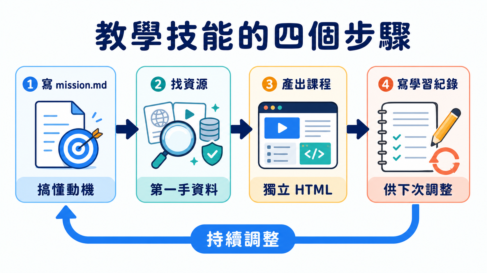
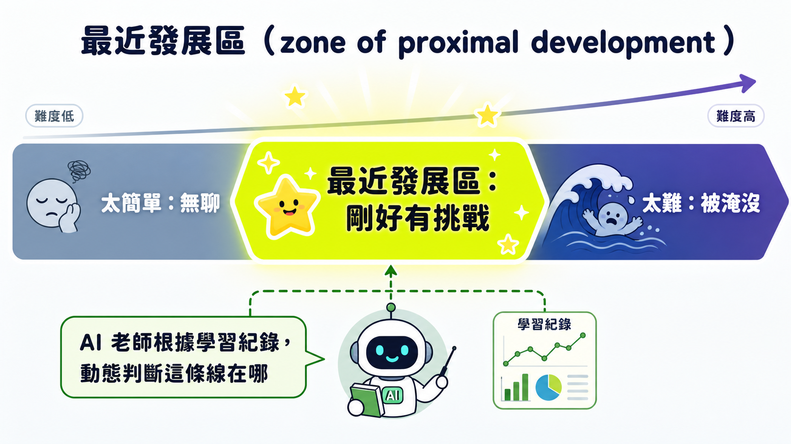

一支影片示範 AI 怎麼教會作者解魔術方塊，聽起來像個討喜但無關痛癢的玩具展示。但把鏡頭拉遠一點會發現，作者真正想解決的問題跟魔術方塊沒什麼關係——他想解決的是「怎麼讓一個原本不具備教學能力的工具，變成一個記得你、了解你、會因材施教的老師」。這件事一旦成立，能套用的場景遠遠超過休閒愛好，包括所有工程團隊都痛恨的一環：新人上線。
作者教程式已經十年，前六年是聲樂教練。他一直想把自己累積的教學直覺封裝成一套任何人都能拿去用的機制，想法放了很久，直到某次搭巴士去倫敦的空檔，他把它寫成一個給 AI 編碼助手用的「技能」（skill）。測試對象選得很隨性——他一直想學解魔術方塊卻沒空認真學，就拿這個當白老鼠。他形容那種感覺不是查資料或跟教學影片練，而是「像真的有一位老師，用我喜歡被教的方式在教我，而且完全對齊我的目標」。
多數教學工具其實都得了失憶症
要理解這套設計為什麼值得拆解，得先搞懂作者反覆強調的一個分野：一個技能是「無狀態」還是「有狀態」。
無狀態的意思是它不記得上一次發生了什麼——每次呼叫都是一張白紙，不會留下任何痕跡讓自己下次接得上。作者拿自己另一個技能「grill me」當對照：它會針對一個主題不斷逼問你，直到你想清楚細節、準備好動手為止，但用完就忘，下次重新開始又是從零逼問。有狀態則相反，會把東西寫進本機檔案或外部服務裡，留給未來的自己讀。他的「grill with docs」就是這樣，把逼問出來的架構決策、術語對照都存下來，所以是會越用越聰明的，grill me 用一百次還是原地踏步。
兩種模式沒有誰優誰劣，差別在有沒有選對場景。而「教學」這件事，作者判斷得很直接：必須是有狀態的。理由很直觀——一個好老師之所以是好老師，關鍵不在懂得多，而在記得你學到哪、卡在哪、上次哪個教法有效。一個每次見面都失憶的老師，充其量是台隨機發講義的機器。多數「AI 教你東西」的工具長得都像 grill me，問一次答一次用完就丟；而真正有效的教學工具，得長得像 grill with docs。
把老師的動作拆開來看，其實是四件事

技能裝好後，操作很簡單：進到空資料夾，對編碼助手說一句「教我怎麼解魔術方塊」，接下來發生的事才是核心。
它做的第一件事不是找資料，而是先寫一份「任務書」（mission.md）。作者的邏輯是，老師要教得有效，得先搞懂學生為什麼想學這件事。系統幫他生成的描述是：「Matt 想要能夠拿一顆打亂的三階魔術方塊，獨立解開至少一次。目標是達成這件事本身，不是求速度，也不是求理論。」這句話看似平淡，卻決定了後面所有課程設計的方向——如果寫的是「求速度」，課程內容會完全不同。
第二步是找資源：上網搜尋第一手、高可信度的資料來源，作為之後產出課程的素材，這件事不是一次性的，會隨學習進度持續更新。第三步，也是作者認為最關鍵的一步——產出第一堂課，存進 lessons 資料夾，而且是獨立的 HTML 檔案，不是 Markdown。他特別強調這個選擇：HTML 遠比 Markdown 有表現力，能做圖解、能做互動元件，這正是整個學習體驗好壞的分水嶺。第一堂課的標題是「解剖結構、記號系統與白十字」，內容剛好卡在他當下需要知道的份量：圖解、簡短說明、重點提示，還有小測驗。測驗的作用不是考試，而是回饋迴路——作者提到任何教學都需要一個回饋迴路，測驗只是找不到更豐富機制時「還算堪用」的選項。
第四步發生在學完之後。當作者回報「對，我學會打白十字了」，系統會把結果寫進一份「學習紀錄」裡，這份紀錄很單純，但正是它讓下一堂課能針對目前狀態調整——就像真正的一對一家教會做的事。
「剛好卡在你會但不熟」的那條線

作者示範了一個更關鍵的場景：清空對話、換一天重新開始。系統這時沒有任何上下文，得靠讀檔案重建狀態，先檢查整個學習工作區，確認進度到哪，接著給出診斷：角轉換（corner cycle）這個演算法的概念已經懂了，但還沒進到肌肉記憶階段。它讀前一堂課的風格，依樣畫葫蘆做出一份新課程，專門練這個尚未內化的動作。
這裡的教學概念，是作者反覆使用的一個詞：最近發展區（zone of proximal development）——永遠把學習內容卡在「剛好有挑戰、但不至於嚇跑你」的那條線上。每一堂課必須精簡、聚焦、精準卡在那個區間，學生既不無聊，也不被淹沒。這堂角轉換的練習課，做出來的是一個可以互動操作的網頁小工具，一步步引導你做出那組手法，還能切換引導模式。作者當場的反應是「這也太酷了吧」——這正是選擇 HTML 而非 Markdown 的意義：你拿到的是瀏覽器的全部能力，不是一份靜態文字檔。因為每次進度都真的寫進了檔案系統，清空對話重來完全不是問題，下一次呼叫技能，它會重新讀檔，把你放回正確的最近發展區，不需要你自己交代進度。
詞彙表跟小抄，其實是在替未來的課程省字數
除了課程本身，系統還累積了幾樣週邊產物。一份詞彙表把過程中出現的怪異術語都收進去，價值不只是查詢方便——有了它，未來的課程可以寫得更精簡，直接引用術語不必每次重新解釋，忘記了自己回去查就好，這件事在學一門程式語言時尤其有用。另外還有「解法卡」，把整套解法濃縮成一張速查表；還有一份 notes.md，是 agent 自己的內部筆記本，寫下你的偏好和需要留意的雷點。
比較有意思的是，系統會在課程底部嘗試找出真實世界的社群讓學習者提問。作者的說法是，知識和技能可以在工作區裡建立，但「智慧」只能靠真的跟社群互動、把想法拿到現實世界試錯才能累積。他講得直白：不希望使用者黏在這個 agent 身上學一輩子，而是希望這套機制給你足夠信心，讓你敢走出去跟真實社群打交道。
這件事真正值錢的地方，不在魔術方塊
作者自己點破了這個工具的商業落地場景：企業內部的新人上線。寫文件這件事他形容「真的很痛苦」——不只要持續維護，更根本的是那份文件的難易度往往完全不對準讀者的最近發展區。新人可能用過類似技術棧但不熟業務領域，也可能反過來懂業務邏輯但連 TypeScript 是什麼都沒概念。傳統文件是寫死的，沒辦法針對每個人的起點調整深淺——這正是這套教學機制想解決的問題：讓新人在自己的工作區裡對著實際程式碼庫，按自己的節奏學會裡面的概念。結果就是，能在破紀錄的時間內得到一個真正上手的員工。
工程師先學會的事，以後會用在完全不相干的地方
影片收在一個更大的觀察上。作者認為工程師社群正處於特殊位置——我們是第一批真正見識到 AI 在它「真正擅長的事」上能做到什麼程度的人，AI 現在寫程式的能力勝過它幾乎任何其他能力。這代表工程師比其他行業更早拿到一個 AI 表現優異的場域來實際測試磨合，也更早成為這波浪潮的第一批實踐者——摸出來的做法可以直接打包成技能，帶去別的領域用。
這也是為什麼作者用魔術方塊、而不是某個程式主題來示範——重點根本不是魔術方塊，而是證明這套機制能搬到任何學習場景，包括他接下來想拿來學和聲、學西洋棋開局的興趣。他的建議很實際：當你用編碼工具卡關、快沒動力時，不妨提醒自己，現在磨出來的這些跟 AI 協作的直覺和手感，以後是可以整套搬去程式以外的領域用的。不管未來工作型態怎麼變，這種跟 AI 合作學習新東西的能力，大概都會是值錢的。